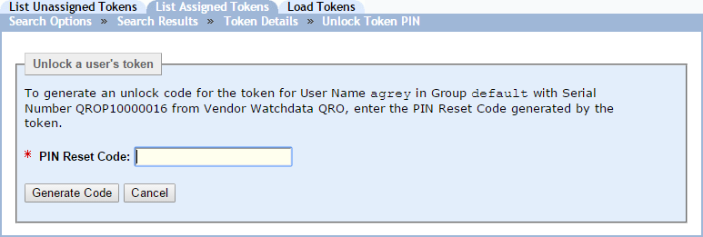
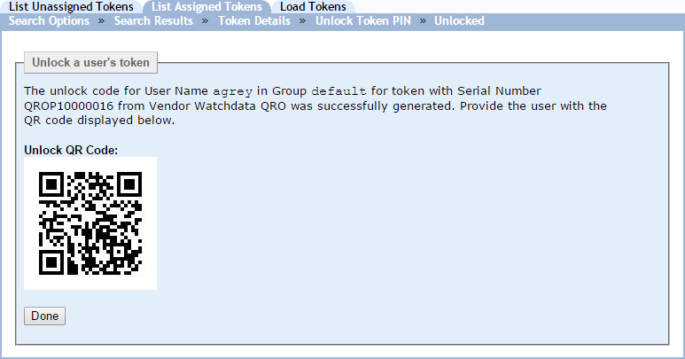

|
IdentityGuard Server 13.0 Administration Guide |
|
IdentityGuard Server 13.0 Administration Guide |
If you have Entrust IdentityGuard Self-Service Module, users can perform this action themselves. See the user procedure in WatchdataQRO tokens.
This procedure describes how to unlock a WatchdataQRO token using the Administration interface.
A token may be configured with a token PIN, in which case the user must enter the PIN to unlock the token before using it. If the user enters the wrong token PIN repeatedly, the token becomes locked, and the token displays an unlock code that must be given to an administrator to begin the PIN unlocking process.
Note: To complete this procedure, the token user must be able to scan the QR code displayed in the Administration interface either in person, or from an image of the QR code captured and sent to the user.
To unlock a WatchdataQRO token
1. Log in to the Entrust IdentityGuard Administration interface as the administrator.
 On the
Windows computer where Entrust IdentityGuard is installed
On the
Windows computer where Entrust IdentityGuard is installed
2. Locate the token to unlock in one of two ways:
● Find a user’s token (see Find assigned token information)
● Find an assigned token (see To search for assigned token information )
3. Click Unlock Token PIN.
The Unlock a user’s token page appears.

4. Have the user tell you PIN reset code displayed on the token.
5. Enter the number in the PIN Reset Code field.
6. Click Generate Code.
The page displays a QR code that contains unlock code for the token.

7. At this point, the user completes the following steps:
a. The user long presses the On button to start up the WatchdataQRO token.
b. As directed by the token screen, the user presses OK to scan the QR code displayed on the Administration interface page.
The token is unlocked.
c. The token prompts the user to set another PIN and then to enter the PIN again to confirm it.
8. In the Administration interface, click Done.